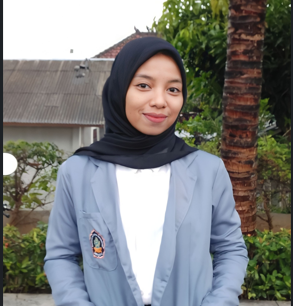

Halo, saya Naylatul Hidayah👋
Perkenalkan saya Naylatul Hidayah usia 23 tahun, lulusan S1 Akuntansi di Universitas Pendidikan Ganesha tahun 2025 Selama kuliah, saya aktif berorganisasi dan pengabdian masyarakat. Saya juga memiliki usaha, yang melatih saya dalam mengelola waktu dengan baik, teliti, dan bersemangat.
💌 naylatulhidayah03@gmail.com | 📞 08386431728